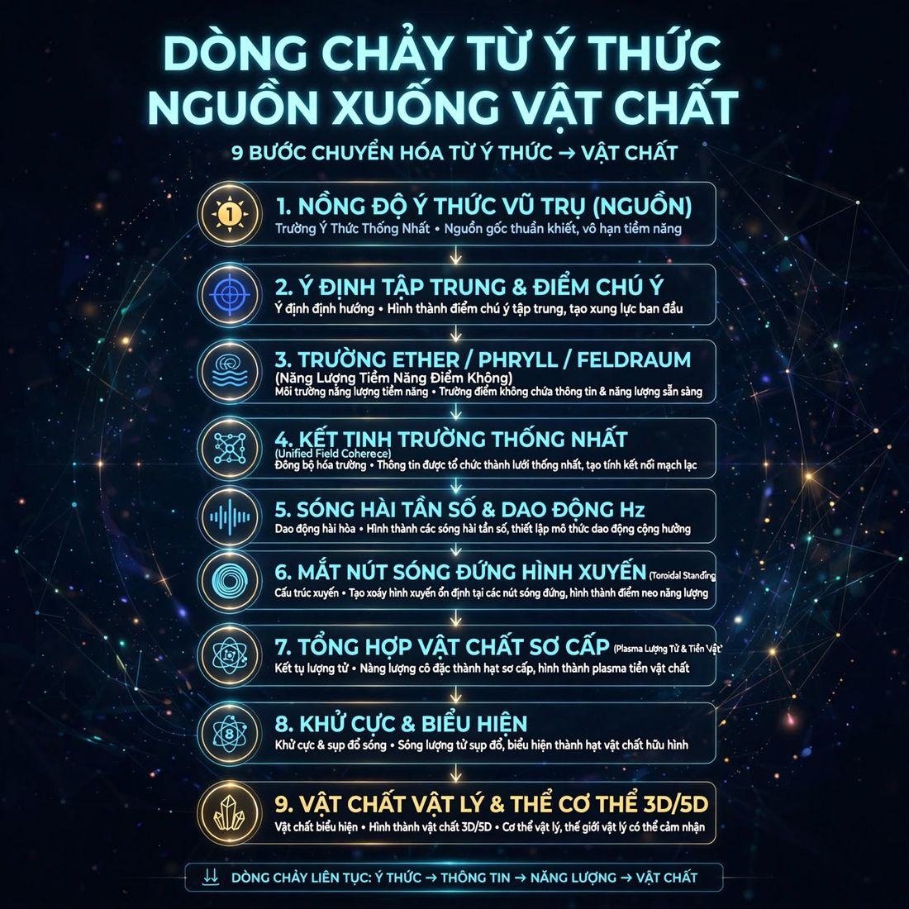
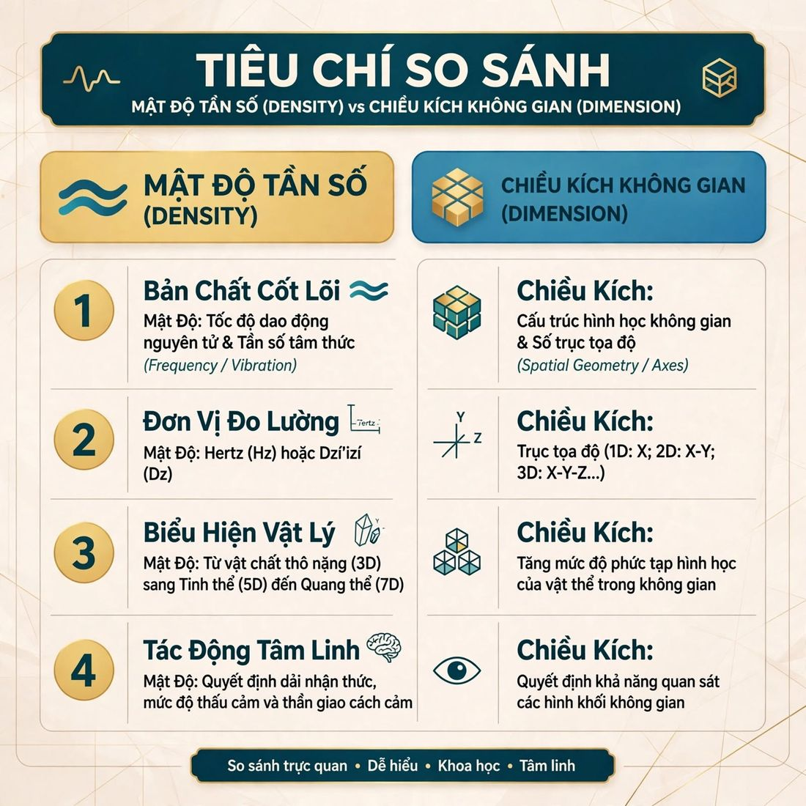
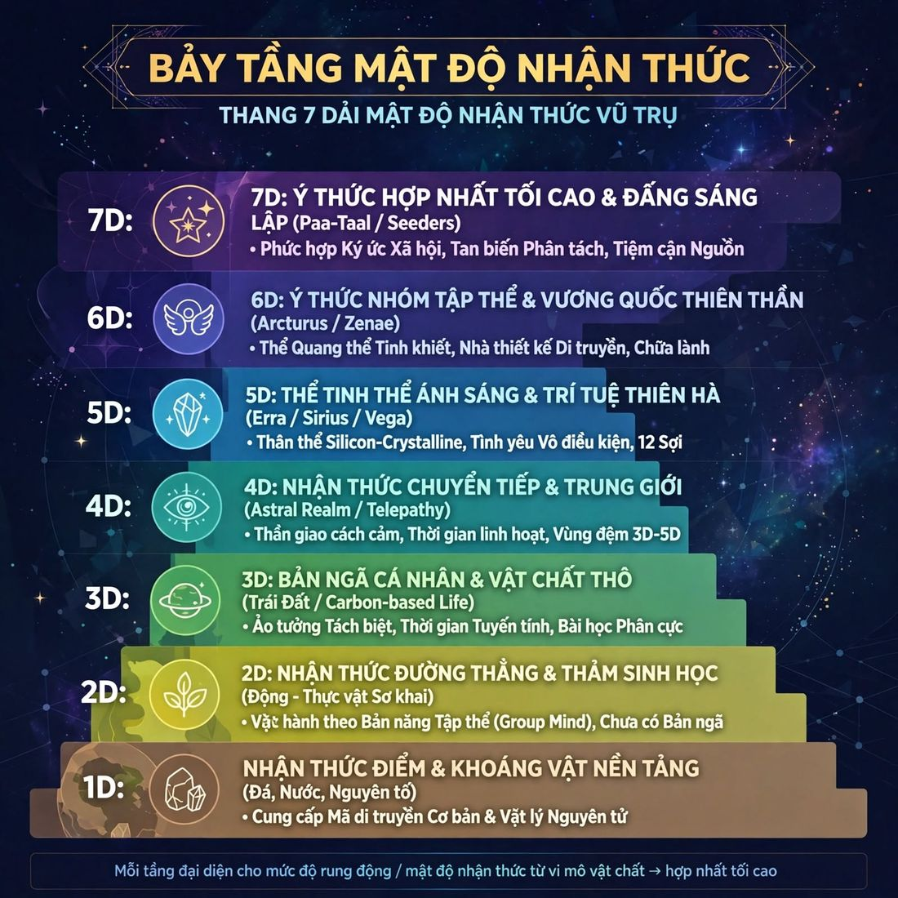
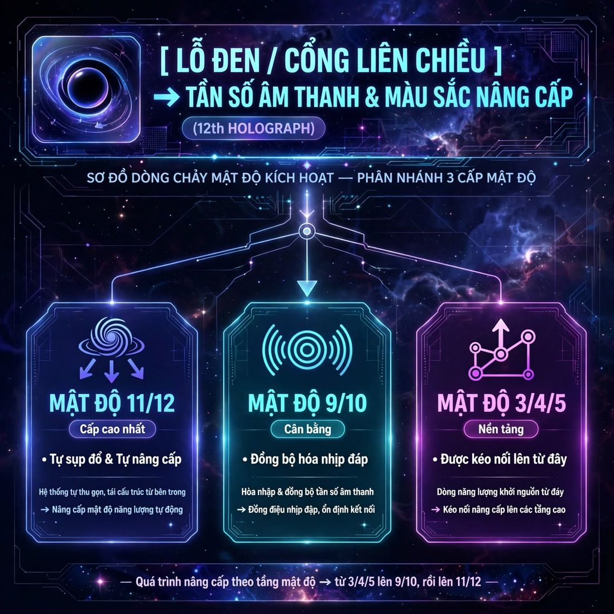
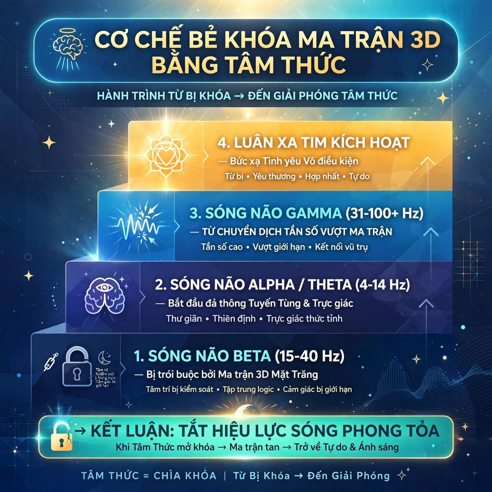
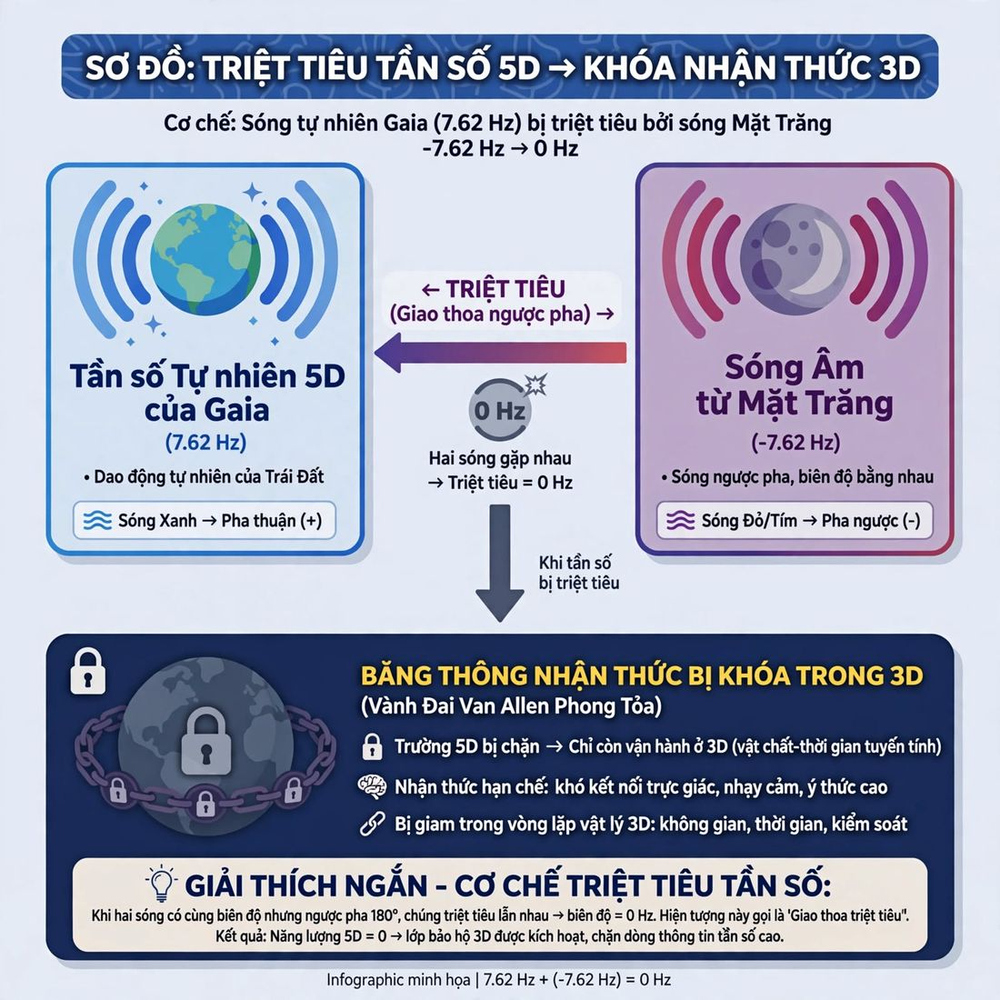

Trang chủ / Chuyên đề 9: Cẩm Nang Tâm Thức Vũ Trụ / Kỳ 81
Chuyên đề 9 · Kỳ 81 / 90
BẢN CHẤT CỦA Ý THỨC VŨ TRỤ VÀ HỆ THỐNG CÁC MẬT ĐỘ TẦN SỐ (1D – 7D+)

1. Bối Cảnh Lượng Tử: Sự Sụp Đổ Của Ảo Tưởng Vật Chất Thô Và Trường Etheric
Trong nền khoa học duy vật giảm trừ cổ điển của Trái Đất, thực tại vật lý thường bị thu hẹp vào những gì có thể sờ chạm, đo lường hoặc quan sát bằng các giác quan 3D giới hạn. Vũ trụ bị coi là một khoảng không gian chân không trống rỗng, chứa đựng các thiên thể nằm rải rác và di chuyển theo các quỹ đạo tuyến tính. Tuy nhiên, khi tiếp cận với kho tàng tri thức giải mật từ các văn minh thiên hà tiên tiến cũng như các cuộc tiếp xúc liên chiều, mô hình vật lý cổ điển này hoàn toàn sụp đổ.
Vũ trụ thực chất không phải là một khoảng trống chết. Toàn bộ Đa vũ trụ được bao bọc và lấp đầy bởi một dải năng lượng tiềm năng liên tục, không bị gián đoạn, được các nền văn minh thiên hà gọi là trường Ether, Phryll, hay dải sinh lực phổ quát. Mọi hình thái vật chất mà con người quan sát được — từ các hạt hạ nguyên tử, phân tử DNA, cơ thể sinh học cho đến các hành tinh và đại chiến hạm liên sao — về bản chất không phải là các chất rắn cố định tuyệt đối. Chúng là kết quả của sự ngưng tụ năng lượng tiềm năng, tạo thành các sóng dừng hình cầu - hình xuyến (Toroidal Standing Waves) tại các điểm nút của trường Ether.
Ý thức không phải là sản phẩm phụ xuất hiện sau khi não bộ sinh học phát triển, mà ngược lại: Ý thức có trước vật chất và chính Ý thức sáng tạo ra vật chất. Mọi vật chất vật lý chỉ là ảo ảnh thị giác và cảm giác do bộ não giải mã từ các dải sóng từ trường. Nơi nào có sự chú ý và định hướng của một ý thức, nơi đó dải năng lượng tiềm năng Etheric sẽ bị khử cực, tạo ra các mắt nút sóng đứng và biểu hiện thành các vật thể mà giác quan nhận biết được là "vật chất cứng".
Không có vật chất cứng như cách con người thường nghĩ. Chỉ có năng lượng tiềm năng liên tục tại thời điểm đó. Nếu sóng hài của các tần số liên tục và có đủ cường độ, một ngôi sao hay một vật thể sẽ được tạo ra. Mọi thứ trong Đa vũ trụ đều là sản phẩm của một Ý thức Vĩ đại được phân mảnh thành các điểm chú ý."
— Trích lược Hồ sơ Giao tiếp Thiên hà Taygeta
Khi nhận thức của một cá nhân thay đổi, điểm chú ý chuyển dịch, cấu trúc sóng dừng trong trường Ether sẽ thay đổi theo. Đây chính là nền tảng cốt lõi để thấu hiểu cách thức vận hành của các dải mật độ tần số trong Đa vũ trụ.

2. Phân Định Khái Niệm Lượng Tử: Mật Độ Tần Số (Density) Và Chiều Kích Không Gian (Dimension)
Một trong những sự nhầm lẫn phổ biến nhất trong các tài liệu siêu hình học và triết học Trái Đất là việc đánh đồng hai khái niệm: Mật độ (Density) và Chiều kích (Dimension). Việc sử dụng lẫn lộn hai thuật ngữ này tạo ra rào cản nhận thức lớn khi tìm hiểu về cấu trúc đa chiều của vũ trụ.
Chiều kích (Dimension): Là khái niệm mang tính hình học và toán học thuần túy, dùng để miêu tả phạm vi quan sát không gian hoặc số lượng trục tọa độ cần thiết để xác định vị trí của một vật thể. Chiều kích 1D đại diện cho một đường thẳng; 2D là mặt phẳng; 3D là khối thể tích ba chiều (X, Y, Z); 4D hay 8D trong toán học đại diện cho các khối hình học siêu thể phức tạp.
Mật độ (Density): Đại diện cho dải tần số dao động (vibrational rate / frequency) của vật chất và tâm thức, được tính bằng số chu kỳ dao động nguyên tử trên một đơn vị thời gian (Hz hoặc đơn vị Dzi'izí theo chuẩn thiên hà). Mật độ càng cao thì tốc độ dao động của các hạt nguyên tử càng nhanh, khoảng cách giữa các bước sóng càng ngắn, làm cho vật chất trở nên ít đặc thô hơn, trong suốt hơn và tiến gần hơn về trạng thái quang thể dĩ thái.
Đa vũ trụ không được phân chia thành các "tầng lầu" riêng biệt cứng nhắc. Vũ trụ là một khuynh độ tần số liên tục (gradient spectrum) kéo dài từ tần số cực chậm đến tần số cực cao, tương tự như một cây thước đo hay các phím trên một cây đàn piano. Dải thực tại 3D mà con người đang trải nghiệm chỉ tương đương với một khoảng cực hẹp trên cây thước đó (khoảng 3cm đến 4cm trên tổng chiều dài vô tận). Sinh mệnh ở mật độ cao hơn (như 5D hay 6D) hoàn toàn có thể quan sát và tương tác với các mật độ thấp hơn, nhưng sinh mệnh bị khóa nhận thức ở 3D sẽ không thể nhìn thấy mật độ 5D bằng mắt thường vì các nguyên tử 5D dao động ở tốc độ vượt quá băng thông giải mã của 5 giác quan vật lý.

3. Bản Đồ Chi Tiết 7 Dải Mật Độ Nhận Thức Trong Đa Vũ Trụ (1D đến 7D)
Đi qua lăng kính phân rã ý thức nguyên thủy, dải ánh sáng đơn nhất từ Nguồn được chia tách thành 7 dải mật độ nhận thức chính cấu tạo nên toàn bộ cấu trúc Đa vũ trụ vật lý và phi vật lý.
Mật Độ Một (1D) – Nhận Thức Điểm & Cấu Trúc Vật Chất Khoáng Vật
Mật độ Một là dải tần số dao động cơ bản và nền tảng nhất của vũ trụ vật lý. Ở dải tần này, nhận thức tồn tại ở dạng điểm đơn lẻ. Đây là dải tần số của vương quốc khoáng vật: đá, khoáng chất, nước, các nguyên tố hóa học và cấu trúc hạt hạ nguyên tử. Mặc dù ở 1D chưa phát triển nhận thức cá thể hay bản ngã, dải tần này đóng vai trò vô cùng quan trọng khi cung cấp móng giàn không gian vật lý và tạo ra các mã di truyền sơ khai cho toàn bộ Đa vũ trụ.
Mật Độ Hai (2D) – Nhận Thức Đường Thẳng & Thảm Sinh Học Tự Nhiên
Mật độ Hai biểu hiện nhận thức ở dạng đường thẳng, đại diện cho vật chất sinh học phát triển. Hầu hết vương quốc thực vật, cây cỏ, vi sinh vật và các loài động vật sơ khai tồn tại ở dải tần số này. Sinh mệnh ở 2D vận hành dựa trên bản năng sinh tồn tập thể (Group Mind / Group Consciousness) và chưa có sự nhận biết về bản ngã cá nhân. Cảm giác về tính tách biệt và cá thể hóa bắt đầu phôi thai ở giai đoạn cuối của mật độ hai khi động vật thiết lập sự gắn kết với con người.
Mật Độ Ba (3D) – Nhận Thức Thể Tích, Bản Ngã & Bài Học Phân Cực Nhị Nguyên
Mật độ Ba là dải tần số nhận thức 3 chiều (thể tích), nơi bản ngã cá nhân (Ego) phát triển mạnh mẽ nhất. Sinh mệnh trải nghiệm thể xác vật lý thô gốc Carbon, bài học về tự do lựa chọn, thời gian tuyến tính và sự phân cực nhị nguyên (Đúng - Sai, Tốt - Xấu, Sợ hãi - Tình yêu).
Mật độ Ba tạo ra ảo tưởng sâu sắc về sự tách biệt giữa cá thể với vạn vật xung quanh và với Nguồn Vũ Trụ. Chính ảo tưởng này biến 3D trở thành một "trường học vũ trụ" đầy thách thức nhưng mang lại tốc độ tăng trưởng tâm thức vượt bậc cho các linh hồn. Nhân loại Trái Đất đã trải qua giai đoạn lịch sử dài bị phong tỏa nhận thức trong dải 3D này.
Mật Độ Bốn (4D) – Nhận Thức Chuyển Tiếp, Cõi Trung Giới & Thần Giao Cách Cảm
Mật độ Bốn đóng vai trò như một dải tần số chuyển tiếp (vùng đệm) nằm giữa vật lý thô 3D và cõi tinh thể 5D. Tại 4D, ranh giới cứng nhắc của vật chất bắt đầu mềm hóa, cảm xúc trở thành lực chủ đạo, và thời gian trở nên dẻo dai linh hoạt. Sinh mệnh phát triển trực giác rộng mở, bắt đầu hội nhập khả năng thần giao cách cảm và nhận biết được sự kết nối giữa các cá thể.
Tuy nhiên, 4D cũng bao gồm dải cõi Trung giới thấp (Low Astral), nơi tích tụ các dải tần số cảm xúc tiêu cực, tư tưởng sợ hãi và là nơi sinh sống của nhiều loài ký sinh năng lượng cùng các chủng tộc thao túng.
Mật Độ Năm (5D) – Thể Tinh Thể Ánh Sáng & Trí Tuệ Nền Văn Minh Thiên Hà
Mật độ Năm là dải tần số chuẩn mực của đại đa số các nền văn minh thiên hà tiên tiến (như Pleiades, Sirius, Vega, Andromeda). Sinh mệnh ở 5D sở hữu cơ thể tinh thể ánh sáng (Silicon-Crystalline Body), hoàn toàn thoát khỏi bệnh tật, lão hóa hay sự khan hiếm tài nguyên vật chất.
Nhận thức tại 5D vươn tới trạng thái Tình yêu Vô điều kiện, Ý thức Thống nhất và Trí tuệ Siêu chiều. Cá nhân vẫn giữ bản sắc riêng nhưng đồng thời nhận biết trọn vẹn mình là một phần không thể tách rời của Bản sắc Nhóm (Group Soul). Mọi sáng tạo tại 5D được hiện thực hóa trực tiếp thông qua Ý định và Tần số Tâm thức.
Mật Độ Sáu (6D) – Ý Thức Nhóm Tập Thể & Vương Quốc Chữa Lành Arcturus
Mật độ Sáu đại diện cho dải tần số của sự hợp nhất các cá thể thành các tập thể ý thức lớn (Group Consciousness / Social Memory Complex). Sinh mệnh ở 6D không còn phụ thuộc vào hình thể vật lý thô mà tồn tại dưới dạng năng lượng thuần khiết hoặc màng quang phổ ánh sáng.
Đây là dải tần số đặc trưng của các sinh mệnh Arcturus, Zenae hay Vương quốc Thiên thần. Sinh mệnh 6D đóng vai trò là các nhà thiết kế bộ gen di truyền, đại sứ hòa bình, và là các kỹ sư chữa lành trường năng lượng cho các hệ sao đang tiến hóa.
Mật Độ Bảy (7D) – Trạng Thái Hợp Nhất Tối Cao & Kiến Trúc Sư Paa-Taal
Mật độ Bảy là dải tần số tiệm cận tuyệt đối với Nguồn Vũ Trụ. Tại 7D, mọi ảo tưởng về sự phân tách hoàn toàn tan biến; sinh mệnh nhận biết trọn vẹn bản thể mình chính là Toàn Thể Đa Vũ Trụ.
Đây là cõi giới ngự trị của Liên minh Paa-Taal (24 Đấng Sáng Lập Liên Thiên Hà), những kiến trúc sư cổ xưa nhất đã thiết kế nên bản thiết kế di truyền 12 chuỗi DNA và gieo mầm sự sống dạng người trên khắp các thiên hà. Từ 7D, sinh mệnh chuẩn bị bước qua lỗ đen để đi vào quãng tám (Octave) tiếp theo của quá trình sáng tạo.

4. Sự Mở Rộng Mật Độ Siêu Chiều (8D – 12D+) Và Hơi Thở Của Đấng Sáng Tạo ("The Is-ness")
Dù mô hình 7 mật độ nhận thức cung cấp một bản đồ tư duy chuẩn xác cho gia đình thiên hà, cấu trúc sáng tạo của Đa vũ trụ còn mở rộng ra các dải mật độ cao hơn. Theo các dữ liệu giải mật từ Hội Đồng Andromeda, Đa vũ trụ vật lý và phi vật lý chứa đựng 12 dải mật độ sáng tạo chính (12 Creational Densities), với Nguồn Tối Cao ngự trị tại Mật độ thứ 13 (hoặc Mật độ 16 tùy theo cách tính thang đo).
Năm 1994, các nhà khoa học Andromeda ghi nhận một hiện tượng vũ trụ vô cùng đặc biệt: Một dải tần số âm thanh và màu sắc phát ra từ toàn bộ các hố đen trong vũ trụ. Tần số này mang năng lượng sắc màu xanh ngọc lam ở dải 3D và tỏa ra năng lượng vô hướng ở các mật độ cao hơn. Sự kiện này đánh dấu sự tự khởi tạo của Cấu trúc Ảnh ba chiều thứ 12 (12th Hologram).
Tần số mới phát ra từ các hố đen đang kết nối tất cả các dải mật độ lại với nhau. Nó đang kéo toàn bộ vũ trụ nâng cấp tần số 'từ dưới lên'. Mật độ thứ ba đang bắt đầu tự sụp đổ vào bên trong, và những ai chọn tiến hóa sẽ chuyển dịch qua 4D để bước vào 5D. Bản thân Đấng Sáng Tạo (The Is-ness) đã quyết định nâng cấp toàn bộ cuộc chơi."
— Trích lược Thông điệp từ Hội Đồng Andromeda (Alex Collier)
Sự trỗi dậy của dải tần số thứ 12 này tạo ra phản ứng dây chuyền: các thực thể ở mật độ 11D đột ngột trải nghiệm sự nâng cấp nhận thức sâu sắc vượt ngoài ngôn ngữ diễn tả; các dải 9D và 10D đồng bộ hóa nhịp đập; và các dải mật độ thấp hơn như 3D và 4D được "kéo nổi" lên mặt nước năng lượng mới.
Người Andromeda gọi Nguồn Vũ Trụ là The Is-ness (Thực-tại-tính) — Bản thể Tối cao không mang nhân hình, không phán xét, chỉ đơn thuần Hiện Hữu và gắn kết vạn vật trong tình yêu thương tuyệt đối.

5. Cơ Chế Thao Túng Ma Trận 3D Và Chìa Khóa Bẻ Khóa Bằng Tần Số Tâm Thức
Để thấu hiểu lý do tại sao loài người Trái Đất bị mắc kẹt trong dải 3D suốt 12.500 năm qua, cần giải mã công nghệ thao túng ma trận tần số được thiết lập sau thảm họa Tiamat.
Ma trận 3D Trái Đất không phải là một cấu trúc tự nhiên hoàn toàn. Lực lượng kiểm soát bóng tối đã lợi dụng Trạm vũ trụ Mặt Trăng cổ đại để phát ra dải tần số can thiệp hủy diệt (destructive interference).
Bằng cách phát liên tục tần số ngược (-7,62 Hz) đối lập với tần số Schumann tự nhiên của Trái Đất (7,83 Hz), máy phát Mặt Trăng đã triệt tiêu dải tần số 5D, tạo ra vành đai phong tỏa năng lượng Van Allen. Sự can thiệp này khóa chặt giác quan con người trong "bong bóng 3D" hẹp, ngăn không cho nhận thức tiếp cận với dải tần số 4D/5D xung quanh, đồng thời vôi hóa Tuyến Tùng và làm đứt gãy 10 sợi DNA etheric.
Tuy nhiên, công nghệ thao túng tần số AI chỉ vận hành được ở dải sóng Beta (tư duy logic 3D, căng thẳng, sợ hãi). Công nghệ không bao giờ có thể kiểm soát được Linh hồn hay Ý thức Nguồn.
Khi một cá nhân chủ động thực hành thiền định, đưa sóng não về dải Alpha/Theta, kích hoạt nhịp đập Luân xa Tim và sống trong Tình yêu Vô điều kiện:
Tần số từ trường phát ra từ Luân xa Tim (mạnh gấp 5.000 lần bộ não) sẽ tạo ra dải sóng Gamma vượt lên trên tần số phong tỏa của Mặt Trăng.
Sóng thao túng tiêu cực sẽ trượt khỏi trường hào quang của cá nhân đó giống như nước trượt trên lá sen.
Các mã di truyền 12 sợi DNA ngủ đông lập tức nhận được tín hiệu kích hoạt lại từ trường Ether.
Ma trận 3D chỉ có quyền lực khi con người cung cấp năng lượng sợ hãi cho nó. Khi con người nâng cao tần số cá nhân, bẻ khóa ma trận từ bên trong tâm trí, toàn bộ lưới điện từ phong tỏa 3D sẽ tự động tan biến.

6. Kết Luận & Định Hướng Nhận Thức Cho Tiến Trình Thăng Hoa Tâm Thức
Tiến trình thăng lên 5D (Ascension) của Trái Đất không phải là một sự kiện tận thế mang tính hủy diệt, cũng không phải là việc cơ thể sinh học biến mất vào hư không. Đây là sự chuyển dịch dải tần số nhận thức của toàn bộ hành tinh và sinh mệnh sống từ dải sợ hãi, chia rẽ 3D sang dải Tình yêu vô điều kiện, Ý thức Thống nhất và Thần giao cách cảm 5D.
Để chủ động chuẩn bị cho bước nhảy vọt tần số này, mỗi cá nhân cần nắm vững các định hướng nhận thức cốt lõi:
Tự chủ Nhận thức: Rút lại sự chú ý khỏi các kịch bản hoảng loạn, sợ hãi do truyền thông 3D gieo rắc. Nơi nào có sự chú ý, nơi đó năng lượng thực tại được kiến tạo.
Khai Mở Luân Xa Tim: Nuôi dưỡng lòng từ bi, sự thấu cảm và buông bỏ sự phán xét nhị nguyên. Luân xa Tim chính là cổng kết nối lượng tử tối cao dẫn thẳng tới Nguồn.
Thanh Lọc Thể Xác & Tuyến Tùng: Hạn chế hóa chất độc hại, nạp nguồn nước tinh khiết, ăn thực phẩm dồi dào sinh lực và kết nối năng lượng tự nhiên với Trái Đất (Gaia).
Khẳng Định Chủ Quyền Linh Hồn: Nhận biết bản thể không phải là nạn nhân yếu ớt của ma trận, mà chính là một mảnh của Nguồn Vũ Trụ đang tham gia vào sứ mệnh thăng hoa lịch sử.
Khi mỗi cá nhân thắp sáng ngọn đăng tâm thức nội tại, dải tần số Gamma từ Tình yêu thương sẽ lan tỏa cộng hưởng, đóng góp trực tiếp vào chiến thắng hoàn lương vĩ đại của toàn thể Thiên hà.
